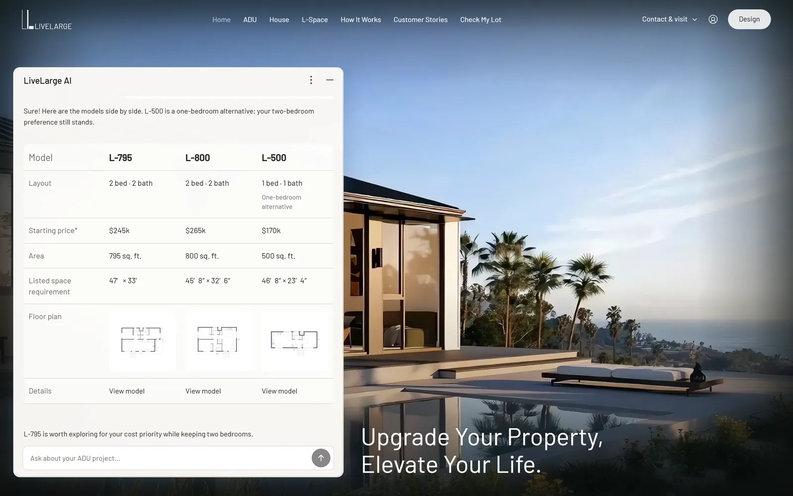
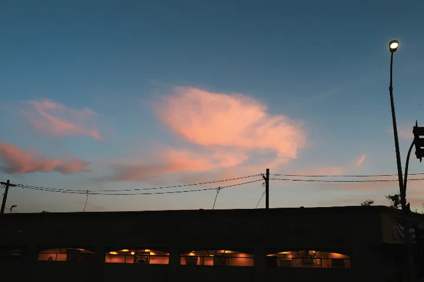
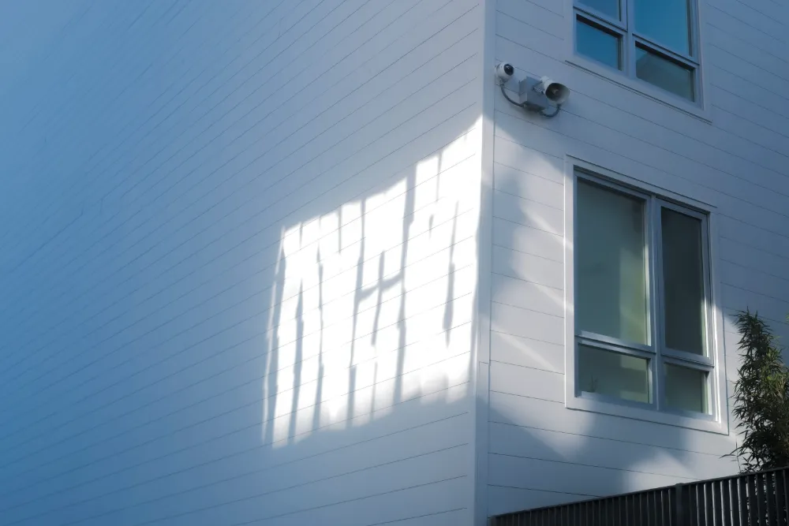
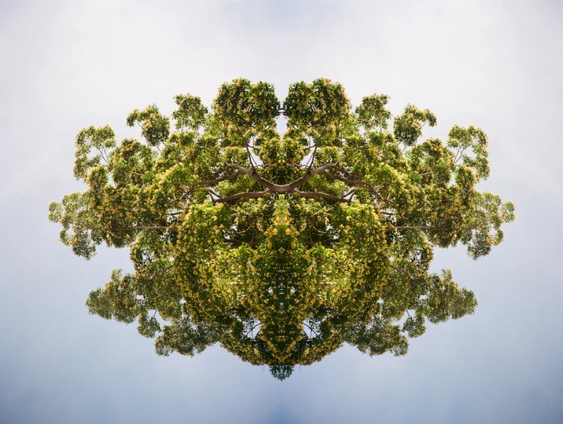
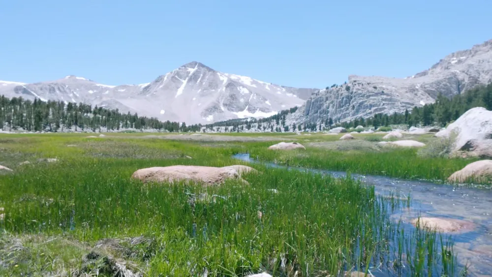

LiveLarge AI
An AI assistant for finding the right ADU.
I design how AI fits into everyday decisions, turning its answers into interfaces people can compare, trust and act on. I care less about what a model can say than about what a person needs to see next.
I also collect clouds   
Away from the screen, I camp and spend time outdoors 